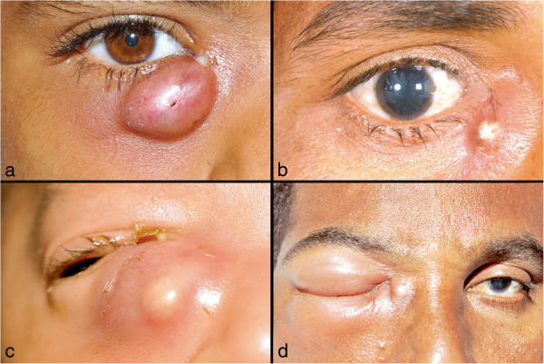
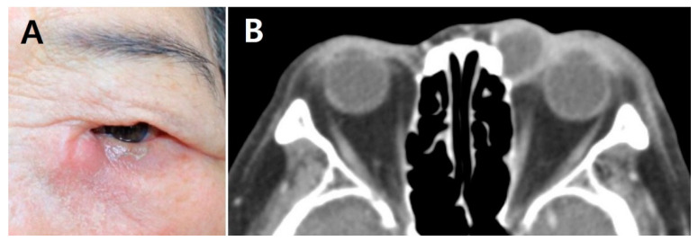
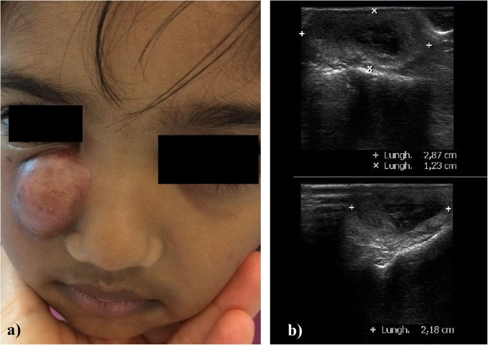
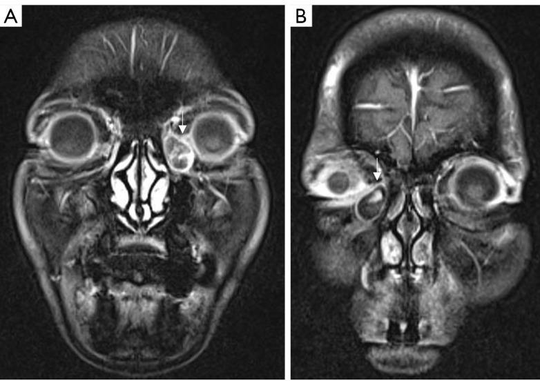
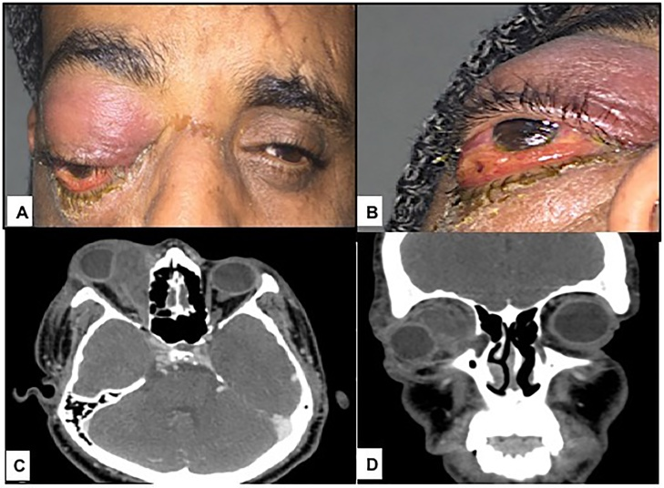
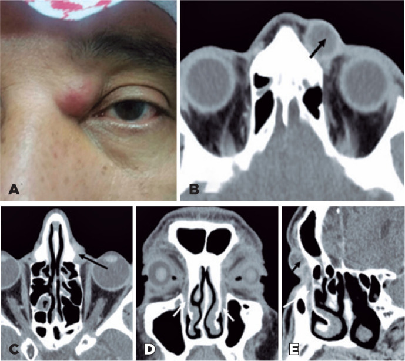

1485 — Viêm túi lệ cấp và áp-xe túi lệ ở người lớn / Acute dacryocystitis & lacrimal sac abscess
Tags: pattern:ap-xe pattern:vien-ngam-thuoc pattern:phu-ne-mo-mem vung:mat vung:hoc-mat protocol:CT-hoc-mat protocol:MRI-hoc-mat incidentaloma:khong
Mức chắc chắn (certainty): tổng hợp y văn (literature synthesis) — ghép các loạt mở: đoàn hệ 41 ca viêm túi lệ cấp (AD) mổ nội soi sớm và 82 ca đối chứng (J Clin Med 2021, PMC8155898, CC BY 4.0), 112 ổ áp-xe túi lệ trong 23 năm (J Ophthalmic Inflamm Infect 2013, PMC3750744, CC BY 2.0), 212 ca viêm túi lệ (Oman J Ophthalmol 2021, PMC8597806), các ca nguyên văn có CT/MRI (Int J Surg Case Rep 2018 PMC6098209; Arq Bras Oftalmol 2022 PMC11826754; Ital J Pediatr 2020 PMC6998065; Quant Imaging Med Surg 2026 PMC13066861) và một ca nấm mucor giả dạng viêm túi lệ (Rom J Ophthalmol 2025, PMC12049641). Phần lớn là loạt hồi cứu đơn trung tâm, không có thử nghiệm ngẫu nhiên; bài giữ dải số và ghi rõ bối cảnh. Ca trong quiz là ca nguyên văn của nguồn, giữ đúng mô tả gốc.
Câu chốt: viêm túi lệ cấp là ổ nhiễm khuẩn của một túi tịt nằm trước vách hốc mắt. Vì vậy câu hỏi hình ảnh không phải "có dịch trong túi lệ không" mà là "vách hốc mắt còn nguyên không, mủ đã ra sau vách chưa, và có khối thật hay không" — ba câu trả lời quyết định kháng sinh đơn thuần, dẫn lưu, hay mổ hốc mắt cấp.
1. Tổng quan bệnh học – cơ chế hình ảnh
- Giải phẫu quyết định bệnh cảnh. Túi lệ là một túi tịt nằm trong hố lệ, giữa van Rosenmüller (phía ống lệ chung) và màng Hasner (đầu dưới ống lệ đạo). Khi ống lệ đạo tắc, nước mắt và chất tiết không có đường ra, ứ lại thành môi trường cho vi khuẩn; viêm túi lệ cấp hầu như luôn là biến chứng của tắc ống lệ đạo mắc phải nguyên phát (PANDO) — 96,23% (204/212) ca trong loạt 212 người (Oman J Ophthalmol 2021, PMC8597806).
- TẠI SAO vách hốc mắt là mốc sống còn. Túi lệ nằm trước vách hốc mắt (orbital septum), nên viêm túi lệ điển hình là viêm mô tế bào trước vách. Vách là hàng rào giải phẫu; khi mủ thủng ra sau vách, nhiễm trùng vào khoang ngoài nón (extraconal) — nơi có mỡ, cơ trực trong, thị thần kinh — và có thể lan tới xoang hang. Đây là lý do một khối "nhỏ ở góc mắt" có thể đe dọa thị lực trong vài ngày.
- Dịch tễ (dải số). Tại một trung tâm mắt tuyến cuối Ấn Độ, tỉ lệ mắc 15/10.000 bệnh nhân, hiện mắc 19,5/10.000; nữ 73,58% (156/212), tuổi trung bình 44,44 ± 18,95 (12–86), 50,94% ở thập niên 30–60; thể mạn tính 86,30%, thể cấp tính là thiểu số (Oman J Ophthalmol 2021). Trong loạt mổ sớm 41 ca AD, tuổi trung bình 66,9 và nữ:nam ≈ 20:1 (J Clin Med 2021) — nhóm mổ có tuổi cao hơn, phản ánh chọn bệnh tuyến cuối.
- Vi sinh (loạt 112 ổ áp-xe, 23 năm). Gram dương 56,3% (63/112), trong đó Staphylococcus aureus 25% (28/112); Gram âm 30,4% (34/112), phổ biến nhất Haemophilus influenzae (30,2% các chủng Gram âm); 10,7% (12/112) cấy vô khuẩn (J Ophthalmic Inflamm Infect 2013). Tỉ lệ vô khuẩn này nhắc: đã dùng kháng sinh trước khi cấy làm giảm dương tính, không được dùng cấy âm để loại nhiễm.
- TẠI SAO hình ảnh trông như vậy (vật lý + mô bệnh). Nội dung túi lệ là dịch–mủ, nên trên CT giảm đậm độ so với cơ, thường trong dải khoảng 0–40 HU; mủ đặc, giàu protein và tế bào có thể lên 20–40 HU, trong khi dịch loãng có thể 0–15 HU — dải chồng lấp lớn, KHÔNG có ngưỡng HU nào phân biệt chắc dịch vô khuẩn với mủ. Thứ giúp phân biệt là hình thái: ổ dịch trung tâm không ngấm thuốc, viền ngấm thuốc (thành túi lệ viêm tăng sinh mạch), mỡ quanh viêm (fat stranding) và hiệu ứng choán chỗ.
- TẠI SAO phải có cản quang. Thành túi lệ bình thường mỏng, không thấy rõ trên CT không cản quang; viêm làm thành dày và ngấm thuốc. Cản quang biến "khối mô mềm" thành hai thông tin: có viền ngấm thuốc hay không (ổ dịch/áp-xe) và có phần đặc ngấm thuốc bên trong hay không (u, tổ chức hạt). Đây cũng là cách phân biệt áp-xe với nang nhầy đơn thuần.
- TẠI SAO mù. Ca nguyên văn 35 tuổi cho thấy chuỗi sự kiện: mủ vỡ ra sau vách → áp-xe ngoài nón 4,7 × 2,0 × 2,1 cm chèn ép → lồi mắt, liệt vận nhãn, nhãn áp 50 mmHg, thị lực không còn cảm nhận ánh sáng (Int J Surg Case Rep 2018, PMC6098209). Cơ chế là chèn ép + thiếu máu thị thần kinh, không phải "viêm dây thần kinh" đơn thuần; vì vậy giảm thị lực là cấp cứu, không phải biến chứng muộn.
- Diễn tiến tự nhiên và mốc thời gian. Trong loạt 41 ca, thời gian có triệu chứng trước chẩn đoán trung bình 7,9 ngày; sau chẩn đoán, giảm đau trung bình 5,0 ngày, hết sưng 9,2 ngày nếu chỉ kháng sinh; mổ sớm rút xuống 2,4 ngày và 6,5 ngày (J Clin Med 2021). 2/41 ca hình thành rò da do áp-xe tự vỡ trong lúc chờ mổ — một biến chứng "lành" nhưng để lại sẹo.
- Yếu tố nguy cơ và bẫy bệnh nền. Nữ, tuổi trung niên–cao, đái tháo đường, suy giảm miễn dịch, dị dạng vách mũi, tiền sử chấn thương/mổ vùng lệ đạo–xoang. Ở người đái tháo đường, viêm túi lệ "không đáp ứng kháng sinh" phải nghĩ nấm mucor xâm lấn — ca 52 tuổi trong Rom J Ophthalmol 2025 (PMC12049641) đã bị chẩn đoán nhầm, điều trị kháng sinh phổ rộng rồi mới phát hiện mucormycosis khi đã lan rộng hốc mắt.
2. Mẫu hình + chẩn đoán phân biệt theo vị trí (Gamut)
- Mẫu hình kinh điển: sưng–đau–đỏ dưới dây chằng góc mắt trong (medial canthal tendon), kèm chảy nước mắt, ấn túi lệ thấy mủ trào ra điểm lệ (ROPLAS), có thể sốt. Đau tăng khi ấn; da căng bóng khi đã áp-xe.
- Ba trục đọc hình ảnh (thay cho mnemonic dài):
- Trước hay sau vách? Trước vách = mỡ trước vách viêm, không lồi mắt, không hạn chế vận nhãn; sau vách = mỡ hốc mắt viêm, lồi mắt, hạn chế vận nhãn, đau khi liếc.
- Dưới hay trên dây chằng góc mắt trong? Dưới = túi lệ/áp-xe túi lệ; trên = u túi lệ, nang nhầy lan lên, nang xoang trán, thoát vị não–màng não, hoặc thể viêm túi lệ ứ đọng.
- Dịch hay đặc? Ổ dịch viền ngấm thuốc = áp-xe/nang; phần đặc ngấm thuốc = u, tổ chức hạt, hoặc nấm xâm lấn.
- Gamut theo vị trí:
- Góc mắt trong, dưới dây chằng: viêm túi lệ cấp · áp-xe túi lệ · nang/nhầy túi lệ · u túi lệ (SCC, lymphoma, melanoma) · viêm túi lệ ứ đọng.
- Trên dây chằng: u túi lệ lan lên · nang nhầy xoang trán · thoát vị não–màng não · nang bì · di căn/u hốc mắt trước.
- Sau vách, ngoài nón: viêm mô tế bào hốc mắt · áp-xe ngoài nón do túi lệ vỡ · áp-xe dưới màng xương từ xoang sàng (bài 1461).
- Bờ mi/da trước vách: viêm mô tế bào trước vách không do túi lệ · mụn nhọt, nang bã, côn trùng đốt · chốc lây.
- Xoang sàng trước: viêm xoang sàng · nang nhầy xoang sàng · nấm xâm lấn (đái tháo đường, giảm miễn dịch).
- Dấu hiệu báo động (red flags) — chụp CT khẩn, không chờ siêu âm: thị lực giảm, đau khi cử động mắt, lồi mắt, hạn chế vận nhãn, giãn đồng tử, sốt cao ở người đái tháo đường/giảm miễn dịch, da hoại tử/đen, khí trong mô, hoặc không đáp ứng kháng sinh sau vài ngày.

Bốn mức độ: (a) áp-xe khu trú có chảy mủ ở góc mắt trong; (b) điểm mủ; (c) áp-xe túi lệ ở trẻ sơ sinh; (d) áp-xe túi lệ kèm viêm mô tế bào hốc mắt. Nguồn: J Ophthalmic Inflamm Infect 2013, PMC3750744, Fig. 1, CC BY 2.0 (nguyên bản).3. Bảng so sánh phân biệt (ma trận đối chiếu)
| Thực thể (entity) | Hình ảnh điển hình (CT/MRI/US) | Chốt vào (rule-in) | Chốt loại (rule-out) | Gợi ý xác nhận |
|---|---|---|---|---|
| Viêm túi lệ cấp chưa áp-xe | Túi lệ căng dịch 0–40 HU, thành dày, ngấm thuốc đều, mỡ quanh viêm nhẹ; không ổ dịch có vỏ | Sưng dưới dây chằng + ấn có mủ ở điểm lệ + thành ngấm thuốc đều | Không có ổ dịch trung tâm; không lồi mắt, không hạn chế vận nhãn | Kháng sinh toàn thân + chườm ấm; siêu âm theo dõi |
| Áp-xe túi lệ | Ổ dịch trung tâm không ngấm thuốc + viền ngấm thuốc dày, có thể khí; da căng, điểm mủ | Viền ngấm thuốc + dao động + điểm mủ | Viền mỏng đều, không dao động, không viêm mỡ quanh = chưa áp-xe | Siêu âm ≥ 12 MHz; chọc/dẫn lưu + cấy mủ |
| Viêm mô tế bào trước vách không do túi lệ | Dày da–mỡ trước vách, không có ổ dịch trung tâm, túi lệ không căng, không liên tục với ống lệ đạo | Phù nề lan tỏa, không điểm đau khu trú trên túi lệ | Có ổ dịch đúng vị trí túi lệ + ống lệ đạo giãn → do túi lệ | Lâm sàng + siêu âm; kháng sinh |
| Viêm mô tế bào hốc mắt / áp-xe ngoài nón do túi lệ vỡ | Mỡ sau vách viêm, lồi mắt, ổ dịch ngoài nón cạnh cơ trực trong; có thể chèn thị thần kinh | Tổn thương sau vách + lồi mắt/hạn chế vận nhãn | Chỉ thay đổi trước vách, không lồi mắt → chưa lan sau vách | CT có cản quang khẩn; MRI nếu nghi nội sọ; dẫn lưu |
| Nang nhầy túi lệ | Túi lệ giãn dịch đồng nhất, thành mỏng, không viêm, không mỡ quanh; có thể vôi hóa | Dịch thuần, thành mỏng, không đau cấp | Thành dày ngấm thuốc + viêm mỡ + đau cấp → viêm/áp-xe | CT/CT-DCG; mổ nếu chèn ép |
| U túi lệ (SCC/lymphoma/melanoma) | Khối đặc ngấm thuốc trong túi lệ, lan lên trên dây chằng, có thể phá xương, không đối xứng | Khối đặc + lan trên dây chằng + phá xương | Ổ dịch thuần, không phần đặc → không phải u | MRI có cản quang + sinh thiết; không DCR đơn thuần |
| Viêm xoang sàng trước | Mờ/xoang sàng trước, có thể áp-xe dưới màng xương hình thấu kính sát lamina papyracea | Mờ xoang sàng cùng bên + ổ dịch dưới màng xương | Xoang sàng trong, không ổ dịch dưới màng xương → ít khả năng | CT xoang ≤ 1 mm; phối hợp TMH |
| Viêm túi lệ ứ đọng (ADR) | Túi lệ căng dịch, không có tắc thật; sau đợt cấp thông lệ đạo trở lại | Không tiền sử chảy nước mắt + hết sau điều trị nội + thông lệ đạo 1 tháng | Tắc thật: vẫn tắc khi thử lại sau khi hết viêm | Thử thông/rửa lệ đạo sau khi hết viêm |
| Nấm mucor xâm lấn | Phá xương, lan mô mềm ngoài xoang/túi lệ, mờ xoang, có thể khí; ngấm thuốc không đồng nhất | Đái tháo đường/giảm miễn dịch + không đáp ứng kháng sinh + phá xương/hoại tử | Tổn thương khu trú trong túi lệ, không phá xương, đáp ứng kháng sinh → ít khả năng | Sinh thiết cấp + nhuộm nấm; không chờ |

Bệnh nhân nữ 80 tuổi: (A) sưng–đỏ quanh túi lệ trái; (B) CT trục có cản quang — ổ dịch viền ngấm thuốc ở góc mắt trong trái, mô mềm quanh hốc mắt ngấm thuốc. Nguồn: J Clin Med 2021, PMC8155898, Fig. 1, CC BY 4.0 (nguyên bản).Đọc ma trận theo thứ tự nào
- Bước 1 — vạch vách: tìm mỡ sau vách viêm, lồi mắt, hạn chế vận nhãn. Chỉ cần một dấu sau vách là đổi phân loại và đổi điều trị.
- Bước 2 — tìm ổ dịch và vỏ: ổ dịch trung tâm không ngấm thuốc + viền ngấm thuốc = áp-xe/nang; không có viền, chỉ có mô mềm dày = viêm mô tế bào.
- Bước 3 — tìm phần đặc và xương: khối đặc ngấm thuốc, lan trên dây chằng, phá xương = u hoặc nấm; đừng "thử DCR" trên khối u.
- Bước 4 — đối chiếu lâm sàng: đau khu trú đúng túi lệ, mủ ở điểm lệ, thời gian diễn tiến. Hình ảnh một mình không phân biệt được viêm túi lệ với viêm mô tế bào quanh túi lệ.
4. Protocol chụp + hệ phân độ/ngưỡng xử trí
- Siêu âm là bước đầu tiên ở tuyến có đầu dò phù hợp. Đầu dò thẳng ≥ 12 MHz, đặt dọc bờ trong ổ mắt, so hai bên; tìm ổ echo trống/giảm âm, tăng hồi âm phía sau, không có phổ Doppler trong lòng (khác khối đặc có mạch). Đo 3 chiều và ghi nhận dao động. Ca 4 tuổi trong Ital J Pediatr 2020 (PMC6998065) có ổ dịch 2,87 × 1,23 cm và 2,18 cm trên siêu âm, đủ để chẩn đoán áp-xe túi lệ mà không cần CT.

Bé gái 4 tuổi: (a) khối đỏ căng dưới góc mắt trong phải; (b) siêu âm — ổ echo trống bờ rõ, đo 2,87 × 1,23 cm và 2,18 cm, không có mạch trong lòng. Nguồn: Ital J Pediatr 2020, PMC6998065, Fig. 1, CC BY 4.0 (nguyên bản).- CT hốc mắt–xoang có cản quang khi có red flag, khi siêu âm không kết luận, hoặc trước mổ: lát ≤ 1 mm, trục + đứng (coronal), cửa sổ mô mềm + xương, trường quét từ trần hốc mắt đến khẩu cái cứng để thấy toàn bộ ống lệ đạo. Cản quang 1,5–2 mL/kg (theo cân nặng, chỉnh theo chức năng thận). Đo: kích thước túi lệ, độ dày thành, chiều dài ổ dịch ngoài nón, mức lan ra sau vách, mờ xoang sàng, khuyết xương, khí trong mô.
- MRI hốc mắt khi: nghi u túi lệ, nghi lan nội sọ/xoang hang, cần đánh giá thị thần kinh, hoặc trẻ cần tránh bức xạ lặp lại. Protocol tối thiểu: T1 không mỡ + T2 fat-sat + T1 fat-sat sau tiêm, thêm DWI/ADC; lớp ≤ 3 mm, trường từ mắt tới giao thoa thị giác.
- CT-DCG (chụp cản quang lệ đạo) không dùng trong đợt cấp vì nguy cơ đẩy mủ; dành cho đánh giá sau khi hết viêm hoặc trước mổ DCR phức tạp.
- Hệ phân độ Chandler cho biến chứng hốc mắt (dùng chung nguyên lý với viêm xoang): I viêm mô tế bào trước vách; II viêm mô tế bào hốc mắt; III áp-xe dưới màng xương; IV áp-xe hốc mắt; V huyết khối xoang hang. Với viêm túi lệ, "Chandler" chỉ dùng để mô tả mức lan, không thay thế đánh giá ổ nguyên phát.
Ngưỡng xử trí (theo bậc):
| Bậc | Bối cảnh | Việc làm | Bằng chứng / số liệu |
|---|---|---|---|
| 1 | Viêm túi lệ cấp chưa áp-xe, không red flag | Kháng sinh toàn thân có phổ Gram dương + Gram âm, chườm ấm, giảm đau; theo dõi 24 giờ | Giảm đau 5,0 ngày, hết sưng 9,2 ngày (loạt 41 ca) |
| 2 | Áp-xe túi lệ (dao động/điểm mủ) | Dẫn lưu ổ mủ (qua da hoặc qua đường lệ đạo) + cấy mủ + kháng sinh; không nặn mạnh | Loạt 112 ổ áp-xe: dẫn lưu + kháng sinh, sau đó DCR |
| 3 | Có chỉ định mổ triệt để và điều kiện cho phép | DCR nội soi sớm ≤ 3 ngày (nếu không, DCR sau khi hết viêm) | Thành công giải phẫu 87,8%, chức năng 82,9% — không kém nhóm không AD (91,5%/84,1%) |
| 3b | So sánh thời điểm mổ sớm | ≤ 3 ngày vs 4–7 ngày | Nằm viện 4,6 vs 7,0 ngày (p = 0,026); kháng sinh 9,8 vs 12,8 ngày (p < 0,001); thành công như nhau |
| 4 | Red flag sau vách (lồi mắt, hạn chế vận nhãn, thị lực giảm) | CT khẩn + dẫn lưu hốc mắt + kháng sinh tĩnh mạch; phối hợp TMH/mắt | Ca 35 tuổi: ổ dịch 4,7 × 2,0 × 2,1 cm, nhãn áp 50 mmHg, mù vĩnh viễn |
| 5 | Đái tháo đường/giảm miễn dịch, không đáp ứng kháng sinh | Nghĩ mucor: sinh thiết cấp + nhuộm nấm + CT/MRI; không chờ | Ca 52 tuổi bị chẩn đoán nhầm, lan rộng hốc mắt |
flowchart TD
A[Sưng đau góc mắt trong ở người lớn] --> B{Có red flag}
B -->|Thị lực giảm hoặc lồi mắt hoặc hạn chế vận nhãn| C[CT hốc mắt có cản quang khẩn]
B -->|Không| D[Siêu âm đầu dò 12 MHz trở lên]
D --> E{Có ổ dịch viền ngấm thuốc và dao động}
E -->|Có| F[Dẫn lưu ổ mủ và cấy mủ và kháng sinh toàn thân]
E -->|Không| G[Kháng sinh toàn thân và chườm ấm và theo dõi]
C --> H{Tổn thương ra sau vách}
H -->|Có| I[Dẫn lưu hốc mắt cấp và kháng sinh tĩnh mạch]
H -->|Không| J[Áp xe túi lệ trước vách]
J --> K{Có dao động hoặc điểm mủ}
K -->|Có| F
K -->|Không| G
F --> L[DCR nội soi sớm trong 3 ngày nếu có điều kiện]
G --> M{Không đáp ứng lâm sàng}
M -->|Có| C
M -->|Không| N[Tiếp tục kháng sinh và DCR sau khi hết viêm]
- Theo dõi sau dẫn lưu: đau giảm trong 2–3 ngày, sưng giảm trong 6–7 ngày sau mổ sớm (J Clin Med 2021); sốt kéo dài, sưng tăng, hoặc xuất hiện lồi mắt = chụp lại ngay, không đổi kháng sinh mù.
- Kháng sinh: chọn theo cấy khi có; kinh nghiệm phải phủ tụ cầu và Gram âm (loạt 112 ổ: Gram dương 56,3%, Gram âm 30,4%). Không dùng corticoid toàn thân đơn thuần để "giảm sưng" khi chưa loại áp-xe.
5. Biến thể bình thường và cạm bẫy
"Trên dây chằng" là dấu hiệu vàng của u, không phải viêm túi lệ điển hình. Trong loạt 9 u túi lệ so với nhóm nang nhầy, khối lan lên trên dây chằng góc mắt trong gặp 8/9 u và 0 ca nang nhầy; ống lệ đạo sâu hơn ở nhóm u (5,08 ± 3,21 mm vs 2,85 ± 0,96 mm, p = 0,042), còn chiều rộng không khác (p = 0,44). Vì vậy khối trên dây chằng → MRI có cản quang + sinh thiết, không DCR.

(A) MRI T1 sau tiêm có bão hòa mỡ, mặt cắt trục: khối đặc hoại tử ngấm thuốc viền ở túi lệ trái, lan lên trên dây chằng góc mắt trong (mũi tên) — SCC hoại tử. (B) Mặt cắt tránh: nang nhầy túi lệ phải — ổ dịch không ngấm thuốc, thành mỏng, không có phần đặc. Nguồn: Quant Imaging Med Surg 2026, PMC13066861, Fig. 2, CC BY-NC-ND 4.0 (nguyên bản, không cắt/ghép).Viêm túi lệ ứ đọng (ADR) — đừng mổ oan. Ca 61 tuổi đái tháo đường có sưng trên dây chằng, không tiền sử chảy nước mắt, CT giống viêm túi lệ cấp; điều trị nội khoa toàn bộ, rửa lệ đạo 1 tháng sau thấy thông hoàn toàn (Arq Bras Oftalmol 2022). ADR là tắc tạm thời, không phải PANDO; DCR ngay là can thiệp thừa.
Nấm mucor giả dạng viêm túi lệ. Ở người đái tháo đường hoặc giảm miễn dịch, viêm túi lệ không đáp ứng kháng sinh phải chụp CT/MRI và sinh thiết; dấu phá xương, lan ra ngoài túi lệ, hoại tử da/mi là red flag. Chậm chẩn đoán làm tăng mức lan hốc mắt (Rom J Ophthalmol 2025).
Nang nhầy ≠ áp-xe. Nang nhầy có thành mỏng, dịch thuần, không viêm mỡ quanh; áp-xe có viền dày ngấm thuốc + mỡ quanh viêm + đau cấp. Gọi nang nhầy là "áp-xe" dẫn tới dẫn lưu không cần thiết; gọi áp-xe là "nang" dẫn tới chậm dẫn lưu.
Đừng nặn/ấn mạnh túi lệ đang viêm. Tăng áp lực trong túi tịt có thể làm mủ vỡ ra sau vách hoặc qua da; động tác nắn chỉ dành cho nang túi lệ bẩm sinh ở trẻ (bài 1483), không dành cho ổ áp-xe cấp.
Không nong/thông lệ đạo trong đợt cấp. Các loạt kinh điển dẫn lưu + kháng sinh rồi mới DCR; thông lệ đạo khi đang viêm có thể đẩy mủ và làm bùng phát nhiễm. Sau khi hết viêm, rửa/thông lại để phân biệt tắc thật với ADR.
Đừng bỏ xoang sàng. Túi lệ nằm sát xoang sàng trước; mờ xoang sàng cùng bên có thể là ổ nguyên phát hoặc đường lan. Chỉ dẫn lưu túi lệ mà bỏ xoang → tái phát; chỉ điều trị xoang mà bỏ áp-xe túi lệ → mủ tiếp tục.
Cạm bẫy sau mổ: viền ngấm thuốc và mờ mỡ quanh có thể còn vài tuần sau dẫn lưu; đừng gọi "áp-xe tái phát" nếu lâm sàng đang cải thiện. Ngược lại, sưng tăng sau 48 giờ hoặc mới xuất hiện lồi mắt phải chụp lại.
Trẻ em: viêm túi lệ ở trẻ thường gắn với tắc lệ đạo bẩm sinh/nang túi lệ — khung bệnh và xử trí khác, xem bài 1483.
6. Tự lượng giá — Blind Quiz
Ca 1 — Nữ 80 tuổi, đau–đỏ–sưng quanh túi lệ trái 3 ngày, không lồi mắt, vận nhãn bình thường. CT có cản quang: ổ dịch viền ngấm thuốc ở góc mắt trong, mô mềm quanh ngấm thuốc. Hỏi chẩn đoán, mức lan, và bước tiếp theo?
- Gợi ý: không sốt, không đái tháo đường, thị lực bình thường.
- Câu hỏi: ổ dịch nằm trước hay sau vách? Có cần mổ hốc mắt không? Chọn kháng sinh và thời điểm DCR thế nào?
Bấm để hiện đáp án (findings + chẩn đoán)
- Findings: ổ dịch trung tâm không ngấm thuốc, viền ngấm thuốc, nằm trước vách ở góc mắt trong trái; mô mềm quanh hốc mắt ngấm thuốc nhưng không có ổ dịch sau vách, không lồi mắt.
- Chẩn đoán: viêm túi lệ cấp có ổ áp-xe nhỏ, còn trước vách (Chandler I), chưa lan hốc mắt.
- Xử trí: kháng sinh toàn thân phủ tụ cầu/Gram âm + chườm ấm; nếu dao động → dẫn lưu + cấy. Trong loạt này, DCR nội soi sớm ≤ 3 ngày đạt thành công giải phẫu 87,8%, chức năng 82,9%, rút ngắn nằm viện còn 4,6 ngày và kháng sinh 9,8 ngày.
- Nguồn ảnh: J Clin Med 2021, PMC8155898, Fig. 1, CC BY 4.0.
Ca 2 — Nam 35 tuổi, sưng góc mắt trong 3 ngày rồi lồi mắt, hạn chế vận nhãn, thị lực không còn cảm nhận ánh sáng, nhãn áp 50 mmHg. CT: túi lệ giãn, ổ dịch ngoài nón 4,7 × 2,0 × 2,1 cm cạnh cơ trực trong. Hỏi chẩn đoán và vì sao mù?

- Gợi ý: trước đó được chẩn đoán viêm túi lệ cấp – viêm mô tế bào trước vách, uống kháng sinh nhưng nặng lên.
- Câu hỏi: ổ dịch ở khoang nào? Cơ chế mù? Xử trí trong bao lâu?
Bấm để hiện đáp án (findings + chẩn đoán)
- Findings: (C, D) túi lệ và ống lệ đạo giãn, ổ dịch lớn không ngấm thuốc ở khoang ngoài nón cạnh cơ trực trong, đẩy lồi nhãn cầu; thành túi lệ ngấm thuốc lan ra sau vách.
- Chẩn đoán: viêm túi lệ cấp vỡ ra sau vách → áp-xe ngoài nón/hốc mắt (Chandler IV), biến chứng mù.
- Vì sao mù: ổ dịch 4,7 × 2,0 × 2,1 cm chèn ép thị thần kinh, kèm nhãn áp 50 mmHg — thiếu máu/chèn ép thị thần kinh, không hồi phục dù dẫn lưu ngay.
- Xử trí: dẫn lưu cấp + kháng sinh tĩnh mạch; đây là biến chứng hiếm — đến 2018 y văn chỉ có 7 ca mù do viêm túi lệ, đến 2025 khoảng 10 ca.
- Nguồn ảnh: Int J Surg Case Rep 2018, PMC6098209, Fig. 1, CC BY-NC-ND 4.0 (nguyên bản, không cắt/ghép).
Ca 3 — Nam 61 tuổi đái tháo đường, sưng đau góc mắt trong 4 ngày, khối nằm TRÊN dây chằng, không có tiền sử chảy nước mắt. CT: túi lệ căng dịch, không phá xương, không ổ dịch sau vách. Điều trị nội khoa bệnh lui; 1 tháng sau rửa lệ đạo thấy thông. Hỏi đây là gì và vì sao KHÔNG mổ DCR ngay?

- Gợi ý: không sốt, không lồi mắt; khối căng, đau.
- Câu hỏi: vì sao vị trí trên dây chằng lại quan trọng? Chẩn đoán? Theo dõi gì để chứng minh?
Bấm để hiện đáp án (findings + chẩn đoán)
- Findings: (A) khối sưng đỏ trên dây chằng góc mắt trong; (B–E) túi lệ căng dịch, bờ rõ, không phá xương, không có ổ dịch sau vách.
- Chẩn đoán: viêm túi lệ ứ đọng (acute dacryocystitis retention, ADR) — tắc tạm thời, không phải PANDO; khối trên dây chằng là điểm dễ nhầm với u/nang nhầy.
- Vì sao không DCR ngay: ADR có thể thông tự nhiên; ca gốc điều trị nội khoa toàn bộ và rửa lệ đạo 1 tháng sau thấy thông hoàn toàn. DCR ngay là can thiệp thừa.
- Theo dõi: rửa/thông lệ đạo sau khi hết viêm — còn tắc mới là PANDO và mới cần DCR.
- Nguồn ảnh: Arq Bras Oftalmol 2022, PMC11826754, Fig. 1, CC BY 4.0.
Bài liên quan chéo
- 400 – Tổng quan Mắt & thị giác
- 410 – Giải phẫu học mắt
- 1483 – Nang túi lệ bẩm sinh & tắc lệ đạo ở trẻ
- 1461 – Áp-xe dưới màng xương hốc mắt ở trẻ
- 424 – Tuyến lệ: viêm vs u
- 423 – Fistula xoang hang vs huyết khối
- 422 – Viêm giả u hốc mắt
Không dùng để chẩn đoán độc lập khi chưa có người hướng dẫn.